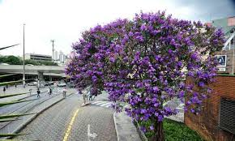
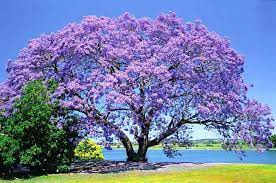
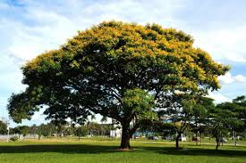
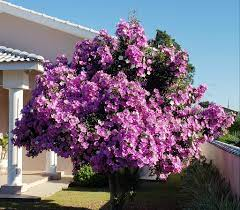
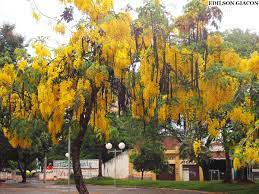
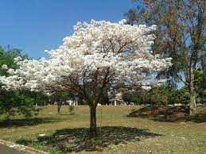

Árvore é um vegetal de tronco lenhoso cujos ramos só saem a certa altura do solo.Em termos biológicos é uma planta permanentemente lenhosa de grande porte, com raízes pivotantes, caule lenhoso do tipo tronco,que forma ramos bem acima do nível do solo e que se estendem até o ápice da raiz.
Os arbustos, além do menor porte, podem exibir ramos desde junto ao solo. Desta maneira apenas as gimnospermas e angiospermas dicotiledôneas lenhosas são consideradas espécies arbóreas
Por pequeno porte, embora não exista uma definição consensual, costuma-se entender uma altura mínima de quatro metros na maturidade, sendo uma sequoia chamada Hyperion, localizada no Parque Nacional de Redwood ao norte de São Francisco, Estados Unidos, o maior exemplar vivo conhecido no momento, possuindo 115,55 [M]
Essa definição exclui as palmeiras, que não possuem crescimento do diâmetro de seu caule para a formação do tronco, além do mesmo também não ser ramificado. Da mesma forma exclui plantas perenes lenhosas de pequeno porte, mas que se desenvolvem como se fossem árvores em miniatura como o salgueiro-anão herbáceo (‘’Salix herbacea L.’’) e o salgueiro-anão reticulado (‘’Salix reticulata L.’’).
7 tipos de arvores comuns no Brasil1- Pata de Vaca (Bauhinia variegata)
A pata-de-vaca, também conhecida como unha-de-vaca, mão-de-vaca ou unha-de-boi, é uma planta medicinal rica em flavonoides, esteróides, taninos e alcalóides, com propriedades antioxidantes, diuréticas e hipoglicemiantes, sendo popularmente utilizada para o tratamento de problemas urinários, diabetes ou pressão alta.
2- Quaresmeira (Tibouchina granulosa)
 ...A Quaresmeira é uma espécie arbórea com altura de 8-12 m e 30-40 cm de diâmetro, com ronco revestido por casca pouco escamosa. As folhas são opostas cruzadas, lanceoladas ou elípticas, rijas e com indumento escabro nas duas faces. As flores são vistosas e de coloração roxa. Os frutos são cápsulas deiscentes contento muitas e diminutas sementes. Existe uma variedade da espécie com as flores róseas.
3- Jacarandá de Minas (Jacaranda Cuspidifolia)
 ...Família Bignoniaceae, árvore com 5 a 10 metros de altura, copa arredondada e bastante ramificada. As folhas são bipinadas, com 20 a 40 cm de comprimento. As flores são tubulosas e medem entre 5 a 7 cm de comprimento, tem cor arroxeada e são reunidas em cachos no final dos ramos. Os frutos são secos e se abrem quando maduros, expondo numerosas sementes aladas.
4- Sibipiruna (Caesalpinia Peltophoroides)
 ...Uma das espécies mais floríferas do gênero Caesalpinia, a sibipiruna pode chegar aos 100 anos de idade, para matar de inveja seus primos pau-brasil (Caesalpinia echinata) e pau-ferro (Caesalpinia ferrea), sem falar e um montão de outras árvores menos longevas.
5- Manacá da Serra (Tibouchina mutabilis)
 ...O manacá-da-serra é uma árvore pioneira da Mata Atlântica brasileira, muito característica da encosta úmida da Serra do Mar e da floresta ombrófila densa da encosta atlântica dos estados do Paraná, Rio de Janeiro, Santa Catarina e São Paulo.
6- Chuva de Ouro (Lophantera lactescens)
 ...A Chuva-de-ouro, canafístula, canafrista, tapira-coiana ou "são-joão-preto" é uma árvore da família das fabáceas, pertencente à subfamília Caesalpinioideae. A planta é nativa do Brasil e possui um ciclo de vida perene. Muito utilizada na arborização urbana por causa das suas flores de cor amarela
7- Ipê-branco (Tabebuia roseo-alba)
Ipê-branco é uma árvore brasileira, descrita inicialmente em 1890 como Bignonia roseo-alba. Seus nomes, tanto científico quanto popular, vêm do tupi-guarani: ipê significa "árvore de casca grossa" e tabebuia é "pau" ou "madeira que flutua". É uma árvore usada como ornamental, nativa do cerrado e pantanal brasileiros.